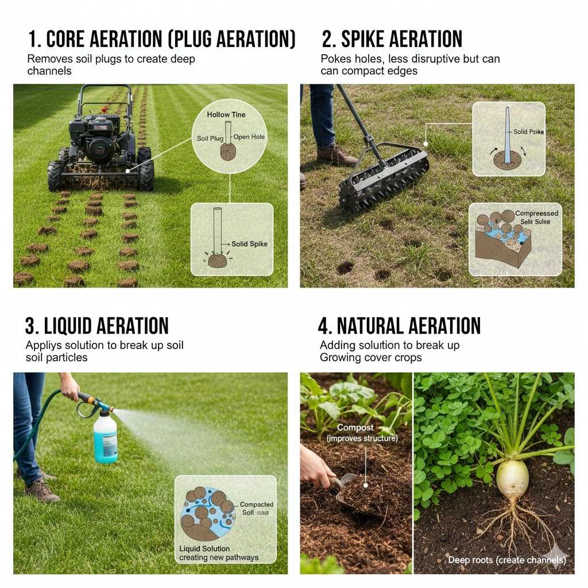
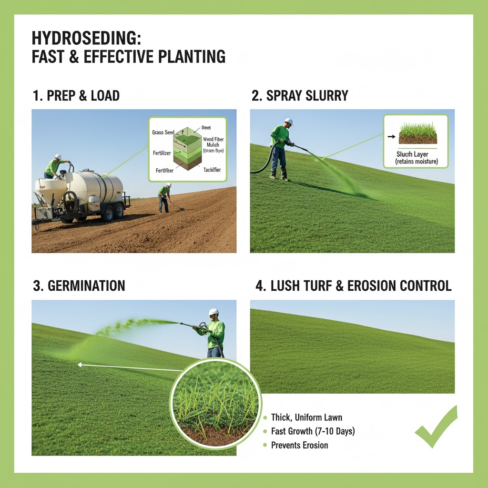

Soil Aeration
Soil aeration is the process of improving the exchange of gases between the atmosphere and the soil. Think of it as allowing the earth to "breathe." In simple terms, it means introducing more air and space into the soil structure to enhance its porosity. This is critical because plant roots and beneficial microorganisms in the soil need oxygen for respiration and energy, while simultaneously releasing carbon dioxide as a byproduct. When soil becomes too dense or compacted, these vital gas exchanges are hindered.
Why is Soil Aeration Important?
Over time, factors like foot traffic, heavy machinery, and natural settling can cause the soil particles to become tightly packed, leading to soil compaction. Aeration is the remedy for this, providing numerous benefits for plant and soil health:
- Relieves Soil Compaction: This is the primary goal. By loosening the soil, air, water, and nutrients can penetrate deeper to the root zone.
- Enhances Gas Exchange: It ensures a sufficient supply of oxygen (O2) for root respiration and helps in the removal of excess carbon dioxide (CO2), which can become toxic.
- Improves Water and Nutrient Uptake: Aerated soil allows water to infiltrate efficiently, reducing runoff and puddling. It also makes fertilizers and essential nutrients more accessible to the roots.
- Stimulates Root Growth: Roots in compacted soil struggle to expand. Aeration creates space, encouraging stronger, deeper, and more vigorous root systems.
- Aids in Thatch Management: Thatch is a layer of dead and undecomposed grass material. Aeration helps mix the thatch with the soil, promoting microbial activity that breaks it down.
- Boosts Microbial Activity: Beneficial soil organisms thrive in oxygen-rich environments, which is crucial for decomposing organic matter and cycling nutrients back to the plants.

Hydroseeding
Hydroseeding is an innovative and highly efficient method of planting that involves spraying a specialized mixture, called a slurry, onto a prepared ground surface. It is widely used for establishing lawns, controlling erosion on slopes, and revegetating large areas like construction sites, golf courses, and commercial properties.
What is in the Hydroseeding Slurry?
Over time, factors like foot traffic, heavy machinery, and natural settling can cause the soil particles to become tightly packed, leading to soil compaction. Aeration is the remedy for this, providing numerous benefits for plant and soil health:
- Grass Seed: A customized mix of grass seed suited to the climate and purpose (e.g., sun, shade, high-traffic).
- Mulch: Usually wood fiber or a cellulose blend, which forms a protective blanket over the seeds. This mulch is often dyed green or blue to help the applicator see where they've sprayed for uniform coverage.
- Fertilizer: Provides essential nutrients to kick-start and support rapid seed germination and early growth.
- Water: The carrier that turns the ingredients into a sprayable liquid.
- Tackifying Agent (Tackifier): A sticky binder that helps the entire slurry adhere firmly to the soil, especially on steep slopes, preventing the seeds from being washed away by rain or wind.

Overseeding
Overseeding is the practice of spreading new grass seed directly over your existing lawn or turf without tearing up the turf or the underlying soil. It's essentially a lawn rejuvenation technique designed to make a thinning, patchy, or worn-out lawn thicker, healthier, and more resilient.
Why is it Important?
Lawns naturally thin out over time due to stress from foot traffic, harsh weather (drought/heat), pests, and disease. Individual grass plants age and eventually die, leaving the turf less dense. Overseeding addresses this decline, providing numerous benefits:
- Increases Lawn Density: The new seedlings fill in thin and bare spots, resulting in a significantly thicker, more lush, and uniform lawn.
- Crowds Out Weeds: A dense, healthy turf creates strong competition for sunlight, water, and nutrients, making it much harder for weeds to germinate and take hold. It's a natural form of weed control.
- Enhances Appearance: Introducing new, vibrant grass varieties can improve the overall color and appearance of an older, "tired" looking lawn.
- Improves Resilience: You can sow newer, improved grass seed varieties that are more tolerant of drought, heat, shade, or diseases than your older existing turf.
- Reduces Erosion: A thicker, more robust root system helps bind the soil together, minimizing soil erosion from heavy rain or wind.